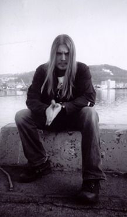
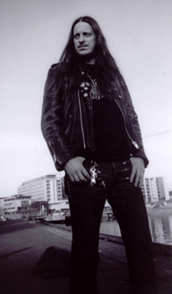
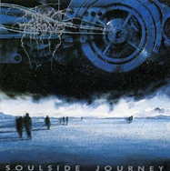
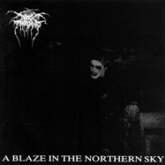
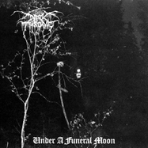
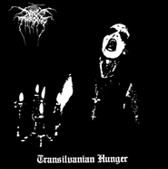
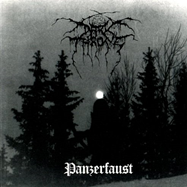
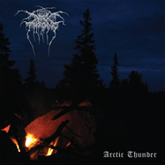

O grupo norueguês foi formado no fim de 1986 em Kolbotn, um pequeno subúrbio de Oslo. Eles eram uma banda de death metal, de nome Black Death, consistida nos integrantes Gylve Nagell, Ivar Enger, e Anders Risberget. Gravaram duas fitas demo em 1987: a primeira cujo nome é "Trash Core", tem Anders Risberget tocando guitarra e Gylve Nagell tocando bateria e cantando; segunda demonstração, lançada dia 12 de outubro, nomeada de "Black Is Beautiful" já tinha um novo membro e guitarrista, Ivar Enger. As duas demonstrações foram lançadas sem distribuição por parte de nenhuma gravadora.
A técnica anteriormente dominada em Soulside Journey foi deixada para trás resultando no CD A Blaze In The Northern Sky, lançado em fevereiro de 1992 pela gravadora Peaceville que não viu com bons olhos o novo rumo que a banda havia trilhado. O disco com uma produção inferior ao CD antecessor revela uma espantosa agressividade, vozes rasgadas e vomitadas manifestando o espírito black metal que a banda havia atingido. No encarte do disco há um agradecimento à Euronymous, o líder da pioneira banda Mayhem e responsável pela formação do gênero na Noruega. No ano seguinte, um novo CD de estúdio sob nome de Under A Funeral Moon é gravado somente pelo trio, que de acordo com Fenriz pode ser considerado o mais black metal da banda.
Em janeiro de 2006, é o ano que lançam o décimo segundo CD da carreira, o The Cult Is Alive. O álbum apresenta uma mudança no estilo sonoro, incorporando traços de crust punk. Pela primeira vez na carreira do Darkthrone, eles resolveram produzir um videoclipe, sendo a canção Too Old, Too Cold a escolhida. Mas um mês antes do lançamento deste CD, a banda lançou um EP intitulado Too Old, Too Cold com uma regravação que deixou muitas pessoas surpresas, da banda Siouxsie And The Banshees (música Love In A Void). Após o lançamento do CD The Cult Is Alive, a dupla lança um single novamente com outro cover. Desta vez foi de uma banda de punk rock chamada Testors, a qual Fenriz é quem cantou na versão regravada. The Cult Is Alive foi também o primeiro disco do Darkthrone a chegar nas paradas musicais da Noruega, estreando no 22º lugar.
| Foto | Nome | Nascimento | Instrumentos |
|---|---|---|---|
|  | |||
|  |
| Capa | Nome | Ano de Lançamento |
|---|---|---|
|  | ||
|  | ||
|  | ||
|  | ||
|  | ||
|  |